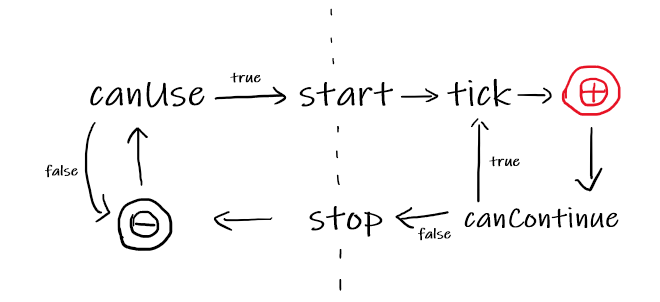
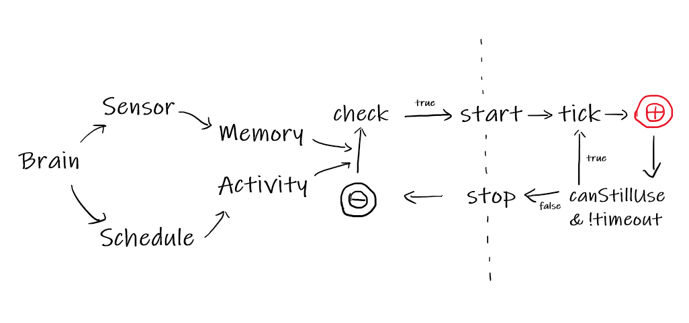

一只羊停下吃草，抬头望着你… 这其实不会发生。
本文介绍 Minecraft 实体相关的目标选择器（Goal Selector）、脑（Brain）等内容，基于 Minecraft 1.18 版本，使用官方映射表。
有感知的实体 - Goal
如果一款游戏里面的生物不会对玩家的行为产生反馈，那就太无聊了。想象这样的场景，NPC 对经过的玩家熟视无睹，和玩家对话时机械地盯着虚空…
在 Minecraft 里，玩家可以很容易地将实体分为两类：无感知的实体，比如船；和有感知的「生物」，比如羊。
回顾一下，羊会干什么呢？
和大部分生物一样，羊会望向接近的玩家；羊也会跟着拿着小麦的玩家，还会吃草…将这些能力一一组合起来，便成为了一个「有感知」的生物。而将这些东西组合在一起的系统，被称为目标选择器。
望向玩家、吃草、跟随玩家都是目标（Goal），它们以不同的优先度出现在目标选择器中。对于一个普通的羊，它会有这些目标：
| Priority | Goal |
|---|---|
| 0 | FloatGoal（浮在水面上） |
| 1 | PanicGoal |
| 2 | BreedGoal |
| 3 | TemptGoal（跟随小麦） |
| 4 | FollowParentGoal |
| 5 | EatBlockGoal（吃草） |
| 6 | WaterAvoidingRandomStrollGoal |
| 7 | LookAtPlayerGoal（望向玩家） |
| 8 | RandomLookAroundGoal |
这些目标以某种形式共同工作：毕竟羊不是时时刻刻都在吃草，也不是时时刻刻都在随机乱走，必然存在一种机制管理它们何时运行，使得它们互相协调。
Goal 生命周期
目光转向 Goal 类的几个方法：
package net.minecraft.world.entity.ai.goal;
public abstract class Goal {
public abstract boolean canUse();
public boolean canContinueToUse();
public void start();
public void stop();
public void tick();
public boolean isInterruptable();
public void setFlags(EnumSet<Goal.Flag> flags);
public EnumSet<Goal.Flag> getFlags();
public enum Flag {
MOVE, LOOK, JUMP, TARGET
}
}前五个方法顾名思义，按照这样的流程运行：

图中黑圈为未运行的 Goal，红圈为正在运行的。以 TemptGoal 为例，这个 Goal 会这样编写：
canUse进行开始条件的判断：寻找附近拿着小麦的玩家。为了性能考虑，这里还可以尽量的缓存一些需要查询的东西，比如对应的玩家、坐标…等等start执行目标开始的逻辑，当然也可以什么都不干。tick每个游戏刻更新目标，比如让羊向玩家走一步。canContinueToUse检查是否仍然应该继续执行：玩家可能走远了，或者把小麦收起来了，或者有新的玩家拿着小麦走来了。stop执行停止的逻辑，这里应该把一开始缓存的东西全部重置掉。
读者可以参考许多源码进一步加深 Goal 生命周期的理解。
Goal 协调机制
我们知道如果羊被玩家打了一下，会到处跑来跑去，此时玩家拿出小麦的话，合理的现象应该是羊还会继续跑来跑去。从上面的表中可以得知，PanicGoal 的优先级高于 TemptGoal，这很合理。
但这引起了一个新的问题，FloatGoal（让生物浮在水面上）的优先度是最高的，但是玩家还是可以用小麦去吸引浮在水面的羊。实际上，这是一个比单纯的优先度更为复杂的机制。
每个 Goal 可能会有一些 Flag，或者把它叫做锁。上面的例子里，FloatGoal 有 JUMP 的锁，PanicGoal 和 TemptGoal 都有 MOVE 的锁。这些锁是「互斥」的，也就是说，同一时间某一种 Flag 只会对应一个 Goal。自然，不持有任何锁的 Goal 不会与其他 Goal 互斥，它们不受影响始终执行。
那么如果同时有两个 canUse 的 Goal 都有 MOVE 呢？显而易见，优先度高（数字小）的执行。但这又带来了新的问题：如果玩家拿着小麦打了一下羊，优先度高的 Goal 突然可用了，优先度低的跟随小麦会怎样呢？当然就应该中断了。
回到 Goal 类的后三个方法：
isInterruptable表明一个 Goal 能否被其他 Goal 中断setFlags用来设置 Goal Flag，一般在构造方法中调用
在 Minecraft 1.18 中，Mojang 引入了一个小优化：观察到通常 canUse 执行最多的代码逻辑来判断和缓存状态，但未运行的 Goal 并不影响实体，并且让羊慢一两刻再对玩家的小麦进行响应通常不会破坏游戏的沉浸感。
优化的方法是，每 N 刻中只有最后一刻进行 canUse/canContinueToUse 检查，其他 N-1 刻只进行 tick 的调用。在 1.18 这个 N 是 2，但也不排除以后会增加，所以不要对这个 N 的具体数值做假设。
回到 Goal 类，1.18 起提供了以下两个方法：
public abstract class Goal {
public boolean requiresUpdateEveryTick();
protected int adjustedTickDelay(int tick);
}其中：
requiresUpdateEveryTick让这个 Goal 每一刻都更新，可以用于实时性高的情景adjustedTickDelay相当于tick/N
考虑 PanicGoal，如果我们想让羊到处乱跑十秒钟，就会这么写（并非 Mojang 实现）：
public class PanicGoal extends Goal {
private int ticks;
@Override public void start() {
this.ticks = adjustedTickDelay(10 * 20); // 10s
}
@Override public boolean canContinueToUse() {
return this.ticks-- > 0;
}
}Goal 注册
实际在 Minecraft 中提供了两个 GoalSelector，另一个用于攻击目标的选择。对于有攻击性的生物，一般在 goalSelector 中注册一个 MeleeAttackGoal（近战攻击）或者 RangedAttackGoal（远程攻击），而在 targetSelector 中注册选择某个敌人进行攻击的 Goal，比如 HurtByTargetGoal（攻击生物的敌人）或者 NearestAttackableTargetGoal（最近的敌人）。
目标通常在 Mob#registerGoals 方法内注册，考虑烈焰人：
public class Blaze extends Mob {
protected void registerGoals() {
this.goalSelector.addGoal(4, new Blaze.BlazeAttackGoal(this));
this.goalSelector.addGoal(5, new MoveTowardsRestrictionGoal(this, 1.0D));
this.goalSelector.addGoal(7, new WaterAvoidingRandomStrollGoal(this, 1.0D, 0.0F));
this.goalSelector.addGoal(8, new LookAtPlayerGoal(this, Player.class, 8.0F));
this.goalSelector.addGoal(8, new RandomLookAroundGoal(this));
this.targetSelector.addGoal(1, (new HurtByTargetGoal(this)).setAlertOthers());
this.targetSelector.addGoal(2, new NearestAttackableTargetGoal<>(this, Player.class, true));
}
}有意识的生物 - Brain
回顾 GoalSelector 系统，我们有什么呢：
- 简单的生命周期 - 大多数时候够用，可如果让羊晚上去睡觉呢？
- 简单的协调机制 - 通过优先度进行替换，Goal 之间难以沟通
- 缺失的持久化
为解决这些痛点，村民更新后出现了一套新的系统：Brain、Sensor（知觉）、Memory（记忆）、Behavior（行为）、Activity（活动）、Schedule（计划）。
核心自然是 Brain 了，它负责存储记忆，按照计划管理活动和行为的运行停止，时不时感知环境变化：

可见，一个行为被激活的要求变得更多了：需要有对应的记忆，也需要正在进行对应的活动。
Memory
Memory，也就是记忆，补齐了 Goal 系统中最大的不足：没有持久化。
想象一下，假如你是一个铁匠，一个玩家不死人打了你一下，如果退出重进之后你就忘了，那也太便宜他了。
public class MemoryModuleType<U> {
public MemoryModuleType(Optional<Codec<U>> codec);
}
public class Brain<E extends LivingEntity> {
public boolean hasMemoryValue(MemoryModuleType<?> type);
public <U> void eraseMemory(MemoryModuleType<U> type);
public <U> void setMemory(MemoryModuleType<U> type, @Nullable U value);
public <U> void setMemoryWithExpiry(MemoryModuleType<U> type, U value, long ticks);
public <U> Optional<U> getMemory(MemoryModuleType<U> type);
}记忆可以被持久化，需要向 MemoryModuleType 的构造方法中传入对应的 Codec。Codec 类中带有一些基础类型的实例，对于更复杂的数据类型比如一个 Map，则可以使用 RecordCodecBuilder 进行构造。对于 Codec 和 DataFixerUpper 的具体使用方法这里不作更多介绍。
记忆也可以过期，也就是「遗忘」。只需要在写入时调用 setMemoryWithExpiry，以刻计算。
Sensor
Sensor 类似于「眼」，它们每隔一段时间进行感知，并将感知到的结果写入记忆中。
public abstract class Sensor<E extends LivingEntity> {
public Sensor(int scanRate);
protected abstract void doTick(ServerLevel level, E entity);
public abstract Set<MemoryModuleType<?>> requires();
}唯一的一个构造参数是扫描（doTick）的频率，按游戏刻计算。
以感知附近拿着小麦的玩家来举例：
requires代表这个 Sensor 会写入哪些记忆，比如拿着小麦的玩家
public Set<MemoryModuleType<?>> requires() {
return Set.of(MemoryModuleType.TEMPTING_PLAYER);
}doTick执行实际的逻辑，并写入记忆；如果并没有搜索到结果，则擦除记忆
protected void doTick(ServerLevel level, LivingEntity entity) {
var brain = entity.getBrain();
for (var player : level.players()) {
if (player.getMainHandItem().getItem() == Items.WHEAT) {
brain.setMemory(MemoryModuleType.TEMPTING_PLAYER, player);
return;
}
}
brain.eraseMemory(MemoryModuleType.TEMPTING_PLAYER);
}Behavior
Behavior 的设计与 Goal 类似，主要有三点不同：
- 构造参数提供了一个
entryCondition，用于判断某个记忆存在（VALUE_PRESENT）、不存在（VALUE_ABSENT）或者无所谓（REGISTERED）。这样的设计分离了进入逻辑 —— 它被转移到 Sensor 了。不过在行为中自定义进入逻辑也是可以的，覆盖checkExtraStartConditions即可。 - 行为开始有两个必要的条件，一个是上面的
entryCondition满足对应的记忆要求，另一个是提供它的 Activity 正激活。 - 退出条件增加了一个超时，也就是说每个行为只有
[minDuration, maxDuration]中随机的一点执行时间，超时或者不能继续进行（canStillUse）都会导致行为停止。timedOut方法可以重写，比如「浮在水面上」我们一般不希望让它超时。
public abstract class Behavior<E extends LivingEntity> {
public Behavior(Map<MemoryModuleType<?>, MemoryStatus> entryCondition,
int minDuration, int maxDuration);
protected void start(ServerLevel level, E entity, long gameTime);
protected void tick(ServerLevel level, E entity, long gameTime);
protected void stop(ServerLevel level, E entity, long gameTime);
protected boolean canStillUse(ServerLevel level, E entity, long gameTime);
protected boolean timedOut(long gameTime);
protected boolean checkExtraStartConditions(ServerLevel level, E entity);
}
public enum MemoryStatus {
VALUE_PRESENT,
VALUE_ABSENT,
REGISTERED;
}Activity
Activity 是一系列有优先度的行为，这一点与 Goal 系统很类似。
public class Brain<E extends LivingEntity> {
public void setCoreActivities(Set<Activity> activities);
public void useDefaultActivity();
public void setActiveActivityIfPossible(Activity activity);
public void setDefaultActivity(Activity activity);
public void addActivity(Activity activity, int priority, List<Behavior<E>> behaviors);
public void addActivityAndRemoveMemoriesWhenStopped(
Activity activity, List<Pair<Integer, Behavior<E>>> behaviors,
Set<Pair<MemoryModuleType<?>, MemoryStatus>> memoryRequirements,
Set<MemoryModuleType<?>> memoryToErase);
public boolean isActive(Activity activity);
}Brain 中有两类活动，Core（核心）和其他的活动。核心活动是一系列任何时候都激活的活动，一般类似「浮在水面上」这种行为就放在里面（setCoreActivities）。其他添加的活动中，有且只有一个会被激活。Activity 类中提供了一些常用的活动，比如 IDLE，这也是默认的活动。
类似行为，活动可以有需要满足的记忆条件（memoryRequirements），因此 Sensor 也可以控制活动。活动也可以指定退出时自动擦除某些记忆（memoryToErase）。如果除了核心活动以外的活动都不满足条件，则默认的活动（setDefaultActivity）被激活。
可能与直觉不同的是，活动退出时，正在运行的行为不会结束。
Schedule
Schedule 是用于按照游戏时间定时切换活动的系统。激活计划需要手动添加一个行为 UpdateActivityFromSchedule，计划如何编写可以直接参考 Schedule 类中的代码。
村民便是使用这套计划系统来进行白天劳作、晚上睡觉。
public class Brain<E extends LivingEntity> {
public void setSchedule(Schedule schedule);
}后记
无论是 Goal 还是 Brain 系统的设计，都无法很好地处理「事件」，类似被玩家攻击的事件是通过一个每刻进行刷新的字段实现的。
如果想要很好地设计能够处理事件的 AI，可以参考这篇文章：
An event-driven behavior trees extension to facilitate non-player multi-agent coordination in video games. DOI:10.1016/j.eswa.2020.113457.
所以你知道为什么一只羊不会停下吃草抬头望着你了吗？